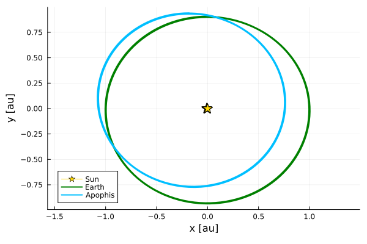
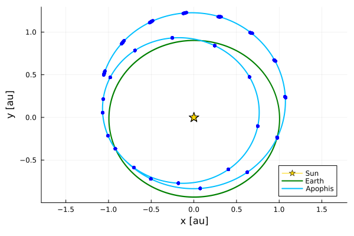

Propagation
NEOs uses an adaptive-step Taylor method [1] to propagate an initial condition in time; for details, see the TaylorIntegration.jl documentation. Below, we explain how to propagate an initial condition using Apophis as an example.
Dynamical model
First, we need to choose a dynamical model. Currently, NEOs supports four different models: sunearthmoon!, newtonian!, gravityonly! and nongravs!; all of which treat the object of interest as a test particle with null mass.
In the following table we summarize the dynamical effects included in each model. For futher details, check the documentation of each function.
| Effect | sunearthmoon! | newtonian! | gravityonly! | nongravs! |
|---|---|---|---|---|
| Newtonian accelerations (Sun, Earth, Moon) | ✅ | ✅ | ✅ | ✅ |
| Newtonian accelerations (+ eight planets) | ❌ | ✅ | ✅ | ✅ |
| Newtonian accelerations (+ 16 most massive asteroids) | ❌ | ❌ | ✅ | ✅ |
| Post-Newtonian accelerations [2] | ❌ | ❌ | ✅ | ✅ |
| Figure-effects (oblateness) [2] | ❌ | ❌ | ✅ | ✅ |
| IAU 1976/1980 Earth orientation model [3] | ❌ | ❌ | ✅ | ✅ |
| Moon's orientation model [3] | ❌ | ❌ | ✅ | ✅ |
| Non-gravitational accelerations [4] | ❌ | ❌ | ❌ | ✅ |
| Multi-threaded internal loops (optional, see Multi-threading) | ✅ | ✅ | ✅ | ✅ |
For now, let's use newtonian! as the dynamical model.
using NEOs
dynamics = newtonian!newtonian! (generic function with 3 methods)Initial condition
Next, we need an initial condition, i.e.:
- an initial time [julian date TDB],
- an initial barycentric cartesian state vector [au, au/day].
For instance, consider Pérez-Hernández & Benet (2022) [5] OR6 solution for Apophis at December 17th, 2020:
using Dates
jd0 = datetime2julian(DateTime(2020, 12, 17)) # TDB
q00 = [-0.18034816472, 0.94069116764, 0.34573641385, # au
-0.0162659357312, 4.39163792E-5, -0.000395210949] # au/day6-element Vector{Float64}:
-0.18034816472
0.94069116764
0.34573641385
-0.0162659357312
4.39163792e-5
-0.000395210949Propagate
Finally, propagate q00 ten years into the future (well beyond the April 2029 close approach)
params = Parameters(maxsteps = 1_000, order = 15, abstol = 1E-12)
nyears_fwd = 10.0
fwd = propagate(dynamics, q00, jd0, nyears_fwd, params)tspan: (7655.5, 11308.0), x: 6 Float64 variablesThe three most important parameters used in propagate are:
maxsteps: the maximum number of steps,order: the degree of the Taylor expansions with respect to time,abstol: the absolute tolerance, used to compute the step size.
Also, the threads parameter controls whether the dynamical model uses multiple threads; see Multi-threading.
With NEOs plotting recipes we can visualize Apophis' orbit and compare it with Earth's.
using Plots
t0 = dtutc2days(DateTime(2020, 12, 17))
tf = dtutc2days(DateTime(2029, 4, 13))
scatter(params.eph_su, t0, tf, xlabel = "x [au]", ylabel = "y [au]",
label = "Sun", color = :gold, markersize = 8, markershape = :star5,
N = 10, projection = :xy, aspect_ratio = 1)
plot!(params.eph_ea, t0, tf, label = "Earth", color = :green, linewidth = 2,
N = 1_000, projection = :xy)
plot!(fwd, t0, tf, label = "Apophis", color = :deepskyblue, linewidth = 2,
N = 1_000, projection = :xy)
Multi-threading
All dynamical models can evaluate their most expensive internal loops (e.g. the interactions between the object of interest and the perturbing bodies) using multiple threads. This behaviour is controlled by the threads parameter (default: true):
params = Parameters(maxsteps = 1_000, order = 15, abstol = 1E-12, threads = true)Multi-threading is used only if threads = true and Julia was started with more than one thread (e.g. julia --threads=4, or setting the JULIA_NUM_THREADS environment variable); otherwise, the serial version of the dynamical model is used. This applies to both the parsed (parse_eqs = true, default) and non-parsed (parse_eqs = false) versions of the model, and the serial and multi-threaded integrations give exactly the same results.
Using multiple threads within the dynamical model speeds up a single propagation, which is useful, for instance, when determining the orbit of an object. However, when many independent propagations are needed (e.g. to propagate many samples of an uncertainty region), it is usually more efficient to set threads = false and use the threads to run several propagations at once:
params = Parameters(params; threads = false)
tasks = [Threads.@spawn propagate(dynamics, q, jd0, nyears_fwd, params) for q in q0s]
sols = fetch.(tasks)where q0s is a vector of initial conditions.
sunearthmoon! supports multi-threading, but its multi-threaded loop only iterates over three bodies (the Sun, the Earth and the Moon), so using multiple threads is not expected to offer any significant speed-up.
Jet transport
NEOs can exploit jet transport techniques to propagate a neighbourhood of initial conditions around the nominal orbit. For instance, we can parametrize the $3\sigma$ uncertainty box as follows:
using TaylorSeries
# Pérez-Hernández (2022) OR6 solution 1-sigma uncertainties
ss = [7.05E-9, 1.71E-9, 4.03E−9, # au
3.31E−11, 6.68E−11, 1.24E−10] # au/day
dq = TaylorSeries.variables!("dx", numvars = 6, order = 2)
q0 = q00 .+ 3ss .* dq6-element Vector{TaylorSeries.TaylorN{Float64}}:
- 0.18034816472 + 2.115e-8 dx₁ + 𝒪(‖x‖³)
0.94069116764 + 5.13e-9 dx₂ + 𝒪(‖x‖³)
0.34573641385 + 1.2090000000000001e-8 dx₃ + 𝒪(‖x‖³)
- 0.0162659357312 + 9.930000000000001e-11 dx₄ + 𝒪(‖x‖³)
4.39163792e-5 + 2.004e-10 dx₅ + 𝒪(‖x‖³)
- 0.000395210949 + 3.7200000000000006e-10 dx₆ + 𝒪(‖x‖³)and propagate it using the same syntax as before
fwdJT = propagate(dynamics, q0, jd0, nyears_fwd, params)tspan: (7655.5, 11308.0), x: 6 TaylorSeries.TaylorN{Float64} variablesNow, we have a polynomial approximation to the evolution of initial conditions close to the nominal orbit, which we can sample via Monte Carlo
using Distributions
lb, up = fill(-3.0, 6), fill(3.0, 6)
dist = Product(Uniform.(lb, up))
dx = [rand(dist) for _ in 1:100]100-element Vector{Vector{Float64}}:
[-0.45933821433526933, 0.5491241407776837, -0.9203907407054599, 0.27501514607319333, 1.4897331555312778, -1.289398603952984]
[2.877237697367505, 1.3615969580719973, -2.1153217729721248, -1.7793925569654665, 0.26663209111664443, -1.1256049440489755]
[-1.9944333650025357, -2.376241966477779, -1.153157859922167, 1.2283522086520309, 0.6501394717279707, -0.444843036147879]
[-1.890120500466009, 0.10272148622056054, 1.8564011151334228, 0.2722266713367789, -1.621831654084548, 2.4946109965977206]
[1.7461828693582042, -2.8278420632348027, -2.3853186265599478, -2.6835672761680787, -2.08300449255885, -0.38679692607029104]
[2.585233732544152, 0.5127169411505625, -1.688505002612544, -2.5803103194400068, -2.38703413534883, -0.11611223125938919]
[0.38828557446414624, 1.3653998037184447, 1.2664925298202814, -1.658813796976276, 0.5772437411538185, -0.8398042927940432]
[2.7588078893954338, 2.687323351196638, -2.0411745267646486, -2.488568814031024, -1.6643875529171908, 2.173851510560806]
[0.8785840243777354, 2.171855522061664, 1.140536465866953, -1.8821970977230698, 1.135209314536418, -1.590962406668868]
[1.1189091785147474, 1.6648822854471748, -1.3802661662732603, -2.1301834287422743, 1.718443896175386, 2.3191989757596154]
⋮
[2.1145518526188116, 1.6397077841161547, -1.0170984933123872, 1.970199109255958, -1.1277667001863325, -0.9417711318383946]
[2.5524335279841077, 2.6695824207430583, 0.7518344118862776, 0.4538844439948373, 0.1593731188175216, -1.5007268817075938]
[-2.336745651667752, -2.6528770677166325, -2.2587216557259584, 2.2518266710466426, -2.2268724448839556, 1.256814568039685]
[-2.1145696168415054, -2.301730391515461, -2.940172157387202, -2.562809456876307, -2.6097102909233483, 1.3237548878353262]
[1.7951201799220557, 2.2350728622795444, 1.8114815559093556, -0.09863421307379205, -1.3665255226237145, -0.326146737908819]
[-2.885625479680891, 1.1671789111924733, -2.102035229932379, 2.2414466178961217, -0.23731619444816676, 0.4374892743682812]
[2.2458634162377713, 2.767496057783551, 0.6808719811346031, 1.4516761618856657, 0.5404794506455248, -2.5445749748253763]
[-0.8875132809161181, 2.499336070681693, 2.5437044268534166, 2.0446262428391657, -2.873067282311429, 0.6050633403258674]
[-0.39851602357300253, 1.9349444275067071, -1.6580866268247754, -2.1616232794493966, 0.655757480820343, 2.2701620968899165]and then evaluate in time, in order to visualize the growth of the uncertainty region after the 2029 close approach.
t0 = dtutc2days(DateTime(2028, 4, 13))
tf = dtutc2days(DateTime(2030, 4, 14))
ts = LinRange(t0, tf, 25)
scatter(params.eph_su, t0, tf, xlabel = "x [au]", ylabel = "y [au]",
label = "Sun", color = :gold, markersize = 8, markershape = :star5,
N = 10, projection = :xy, aspect_ratio = 1)
plot!(params.eph_ea, t0, tf, label = "Earth", color = :green, linewidth = 2,
N = 1_000, projection = :xy)
plot!(fwd, t0, tf, label = "Apophis", color = :deepskyblue, linewidth = 2,
N = 1_000, projection = :xy)
for t in ts
ps = map(d -> fwdJT(t)(d)[1:2], dx)
scatter!(first.(ps), last.(ps), color = :blue, markersize = 3,
markerstrokewidth = 0, label = "")
end
plot!()
References
- [1]
- À. Jorba and M. Zou. A Software Package for the Numerical Integration of ODEs by Means of High-Order Taylor Methods. Experimental Mathematics 14, 99–117 (2005).
- [2]
- T. Moyer. Mathematical formulation of the Double Precision Orbit Determination Program (DPODP). Jet Propulsion Laboratory Technical Report, 32–1527 (1971).
- [3]
- W. Folkner, J. Williams, D. Boggs, R. Park and P. Kuchynka. The Planetary and Lunar Ephemerides DE430 and DE431. Interplanetary Network Progress Report 42–196, 1–81 (2014).
- [4]
- B. G. Marsden, Z. Sekanina and D. Yeomans. Comets and nongravitational forces. V. The Astronomical Journal 78, 211–225 (1973).
- [5]
- J. A. Pérez-Hernández and L. Benet. Non-zero Yarkovsky acceleration for near-Earth asteroid (99942) Apophis. Communications Earth & Environment 3 (2022).